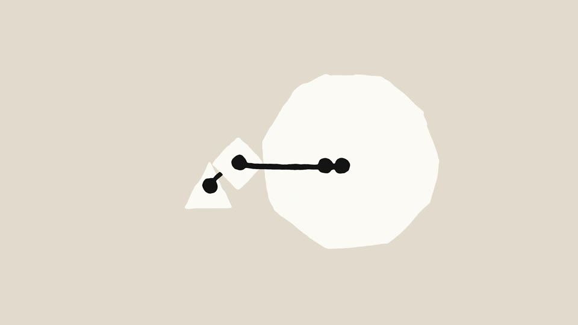
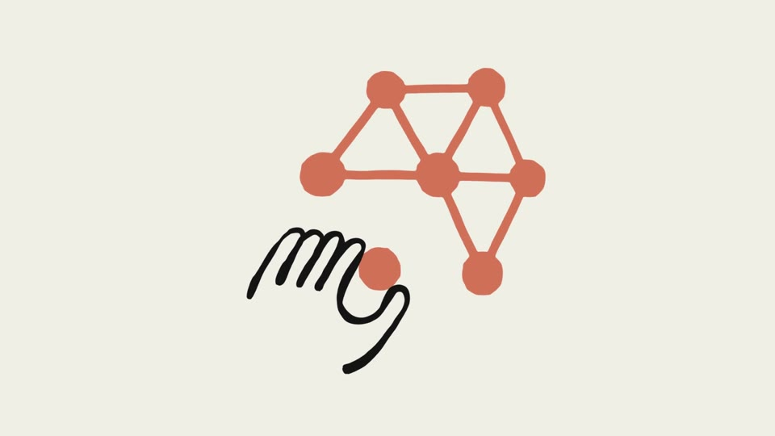
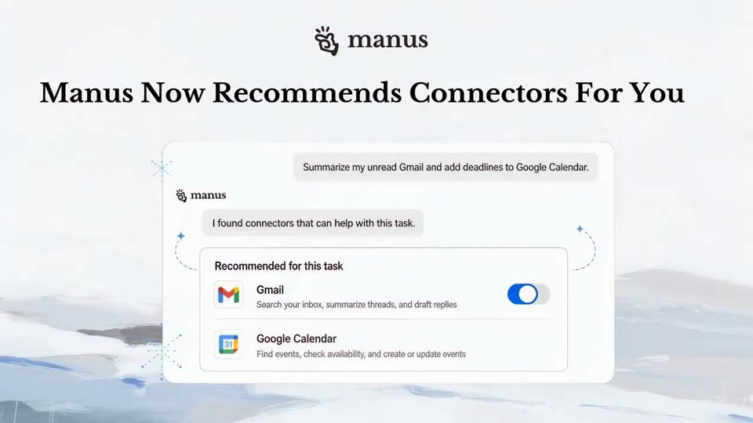

A drawn idea hands over to the UI
A hand-drawn sketch (a boiling marker line, paper cut-outs) states the idea, and its drawn screen or plate becomes the real UI at the same size and in the same place.






The rules
Black marker ~1.7% of height that “boils” (redrawn every 2 frames), on warm grey or cream.
Stepped timing (~16 drawings/s) and one terracotta accent.
The drawing’s area fills and becomes the real UI at the same position and size.
Later, marker scribbles point at exactly what an action changes.
The invisible work can be a halftone cloud with a status pill.
For Kallo
A one-line marker plate with a question mark: the plate fills and becomes the result card. Or a hand sets down one dot (the meal) that splits into its ingredients.
Warm and human, and the clearest way to explain “we break your meal into ingredients”.
It needs real craft (the boil, the stepped timing) or it looks like clip art.
Films
Claude · Financial agent templates · 14M views
Claude · Work tools on mobile · 8M views
Claude · Claude Security · 5M views
Claude · Cowork · 5M views